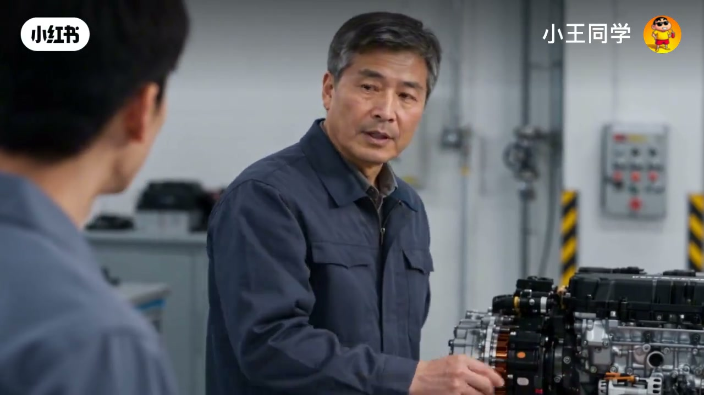
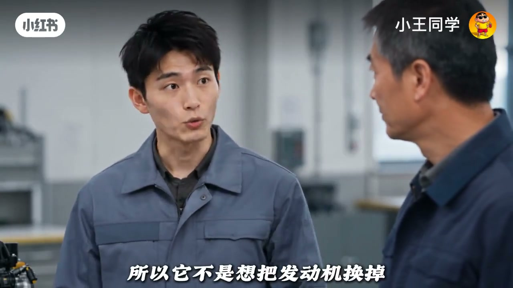
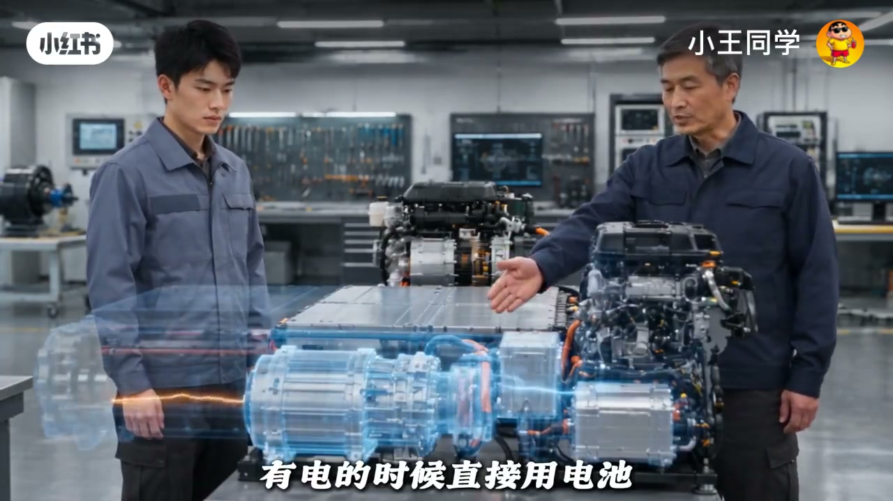
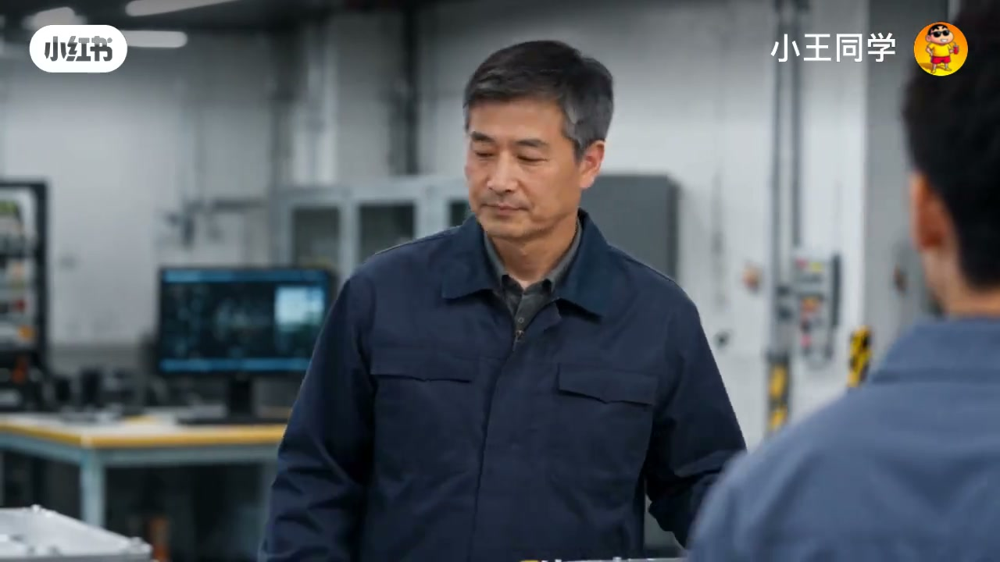
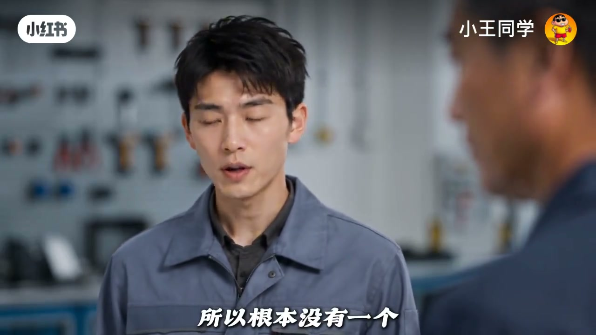

内容要点
徒弟问：油混和增程都被说成过渡技术，为什么都有发动机、电机和电池，油混电池那么小，增程却恨不得装大电池还让发动机只发电？师傅答：他们从一开始就没打算解决同一道题——油混要让发动机少浪费，增程要让发动机尽量别碰车轮。最优解取决于充电条件与路况，而不是谁听起来更先进。
知识结构
油混：发动机躲不掉就少浪费；增程：平时别让发动机驱动车轮。
油混电池像缓冲池；刹车发电把扔掉的动能留给下一脚。
烧油→电→电机绕远路；城市舒服，长期高速靠发电效率会打折。
无稳定充电→油混；能常充又怕长途焦虑→增程。
所谓最优解，不是看谁的结构更新潮，而是每一滴油、每一度电有没有被安排去干它最擅长的事。
00:00-01:10同一套零件，两道不同的题
开场把常见口号拆开：油混电池小、增程电池大且发动机主要发电——看起来都是「发动机+电机+电池」，目标却相反。师傅说油混承认发动机躲不掉，所以让它少浪费；增程想的是平时干脆别让发动机碰车轮。
小电池对油混仍有意义：它更像能量缓冲池，起步低速让电机帮发动机干不擅长的活，而不是指望纯电跑几百公里。


01:10-02:30左手倒右手？关键在刹车回收
徒弟质疑：电最后不还是发动机烧油来的？师傅承认若所有电都现烧现发，意义有限；真正关键是还能把本来要扔掉的动能捡回来——普通油车刹车大量变热，油混可让电机发电塞回电池。
「把上一脚浪费掉的力气留给下一脚」——这是油混价值的可感知解释，而不是只看油箱到车轮的路径长短。

02:30-03:55增程绕不绕远，取决于你怎么用
增程更彻底：车轮主要交给电机；有电用电池，电不够发动机带发电机补能——发动机从主角变后勤。绕远路（油→电→电机）在城市走走停停可能仍舒服，长时间高速又主要靠发电时，中间损耗不可忽视。
选型结论：没有稳定充电又想比纯燃油省——油混有价值；能经常充电、多数通勤纯电、又怕长途补能——增程有意义。天天不充电却背着大电池烧油跑，账要重算。收尾：「一个是电机迁就发动机，一个是发动机迁就电机。」


完整转录（126段）
以下文本由 Whisper medium 模型自动转录，可能存在少量识别误差，已尽可能修正。
师傅
油混和增程经常都被说成过渡技术
可我一直没搞懂
他们明明都有发动机 电机和电池
为什么油混电池那么小
增程却恨不得装一块大电池
还让发动机只发电
因为他们从一开始就没打算解决同一道题
什么意思
油混想的是发动机躲不掉
那就让他少浪费一点
增程想的是能不能平时干脆别让发动机碰车轮
电池这么小也跑不了多远
有什么意义
因为油混从来没指望他单独跑几百公里
他更像一个能量缓冲池
起步低速的时候
电机帮发动机干他不擅长的活
减速刹车的时候
再把原来要浪费掉的一部分能量收回来
所以他不是想把发动机换掉
对
他真正想做的是
别让发动机老去干自己最费油的活
可他的电最后不还是发动机烧油来的
那不是左手倒右手吗
如果所有电都靠发动机现烧现发
那当然没多大意思
真正关键的不是刚才那一条路
关键是他还能把你本来要扔掉的东西捡回来
刹车
对
普通油车减速的时候
车的动能最后大量变成刹车上的热
油混可以让电机反过来发电
把一部分能量塞回电池
下一次起步再拿出来用
这就叫把上一脚浪费掉的力气留给下一脚
那增程为什么不学油混
发动机都装上来了
直接带车轮不是更省事
典型增程的想法更彻底
车轮主要交给电机
有电的时候直接用电池
电不够了
发动机启动
但主要负责带发电机
所以发动机从主角变成后勤了
对
他不负责决定车怎么开
他只负责电不够的时候把电补上
等等
发动机先烧火
再变成电
电再进电机
最后才到车轮
这不是明摆着绕远路吗
这就是增程最有意思的地方
也是他最大的争议
到底亏不亏
看工况
城市里走走停停
电机负责驱动很舒服
发动机也可以尽量避开一些难受的工况
但如果长时间高速
又主要靠发动机电
再变回机器内
中间每一步都不可能百分之百都天然更少
技术最怕的就是把某个场景好用
说成所有场景最优
一个不插电
一个能当电车开
到底谁更聪明
还是看你怎么用
油混的优势是
不需要你改变补能习惯
加油就走
电池不用特别大
却能靠电机和能量回收
把发动机效率炸得更充分
增程呢
如果你平时能充电
多数通勤都在纯电范围里
那发动机可能很少启动
开起来也更接近纯电车
可要是天天不充电
那你买了一块大电池
却长期背着它烧油跑
这时候账就得重新算了
所以油混是想把发动机
利用得更聪明
增程是想让发动机
尽量少参与驾驶
这句话靠谱
那他们到底谁才是最优解
如果你没有稳定充电条件
又想比普通燃油车更省油
油混很有价值
如果你能经常充电
大多数路程都希望当电车开
又怕长途补能焦虑
增程就有它的意义
所以根本没有一个
放哪儿都最优的答案
当然没有
那为什么大家总喜欢问
谁会淘汰谁
因为谁赢了很好讲
工程却从来没那么简单
油混这一派认为
发动机还有价值
那就用电机帮它避开
最浪费的地方
增程这一派认为
既然电机更适合驱动车轮
那就让发动机退到后面
只负责补能
一个是电机迁就发动机
一个是发动机迁就电机
所以所谓最优解
从来不是看谁的结构
听起来更先进
而是你的每一滴
每一度电
有没有被安排去
干它最擅长的那件事